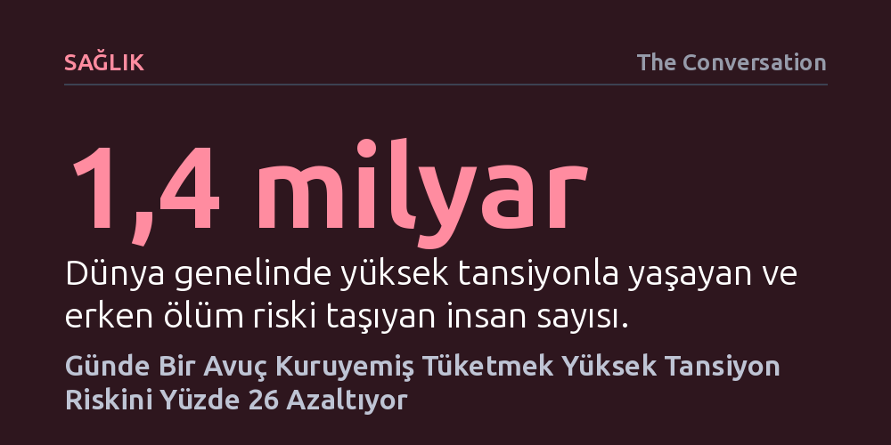

SAGLIK · The Conversation · 2026-09-08
Günde bir avuç (30-35 gram) kuruyemiş tüketmek, yüksek tansiyon riskini yüzde 26 oranında azaltıyor. 143 bin kişinin verilerini inceleyen yeni araştırma, bu koruyucu etkinin damarları gevşeten ve sodyumu vücuttan atan bileşenlerden kaynaklandığını ortaya koyuyor.
Yüksek kalorili olduğu için çekinilen kuruyemişlerin, günde sadece bir avuç tüketildiğinde yüksek tansiyona karşı en güçlü ve erişilebilir doğal kalkanlardan biri olduğunu kanıtlıyor.

Dünya genelinde 1,4 milyardan fazla insan yüksek tansiyonla yaşıyor. Kalp krizinden felce, böbrek yetmezliğinden demansa kadar uzanan ölümcül tabloların ardındaki bir numaralı metabolik risk faktörü tam olarak bu sessiz seyreden basınç artışı. Ancak tablonun umut veren bir yönü var: Yüksek tansiyon vakalarının büyük bölümü genetik kaderimizden ziyade ne yiyip nasıl yaşadığımızla şekilleniyor; bu da beslenme tarzındaki ufak değişikliklerin devasa bir fark yaratabileceği anlamına geliyor.
British Journal of Nutrition'da yayımlanan kapsamlı meta-analiz, bu değişimin boyutunu somut verilerle ortaya koydu. 20 bini aşkın hipertansiyon hastasının yer aldığı 143 bin kişilik veriyi inceleyen araştırmacılar, günde yaklaşık bir avuç (30-35 gram) kuruyemiş tüketenlerin, hiç kuruyemiş yemeyenlere kıyasla yüksek tansiyon geliştirme riskinin yüzde 26 daha düşük olduğunu belirledi. Benzer koruyucu etkiler günde 800 gram sebze-meyve tüketildiğinde yüzde 11, tam tahıllarda yüzde 26, baklagillerde ise yüzde 16 seviyesinde görülüyor.
Bitkisel gıdaların kalbi koruma gücü, içerdikleri kimyasal cephaneliğin birlikte çalışmasından kaynaklanıyor. Kuruyemişler öncelikle zengin birer potasyum kaynağı. Potasyum, böbreklerin fazla sodyumu vücuttan atmasını kolaylaştırarak ve damar duvarlarındaki kas hücrelerini gevşeterek kan basıncını doğrudan aşağı çekiyor.
İkinci kritik hat ise bağırsaklarımızda kuruluyor. Kuruyemişlerdeki lifler sindirim sistemindeki yararlı bakterileri besliyor; bu bakteriler de tansiyonu dengelediği kanıtlanan kısa zincirli yağ asitleri üretiyor. Buna ek olarak, kuruyemişlerde bolca bulunan L-arjinin amino asidi ve nitratlar, vücutta nitrik okside dönüştürülerek damarların genişlemesini sağlıyor. Polifenol adı verilen antioksidan bileşikler de damar içi iltihabı baskılayarak bu etkiyi pekiştiriyor.
Üstelik kuruyemişler sanılanın aksine kilo kontrolüne de yardımcı oluyor. Enerji yoğunluğu yüksek besinler olmalarına rağmen, tokluk hissi sağlamaları sayesinde düzenli tüketen bireylerde obezite oranlarının daha düşük olduğu ve bunun da tansiyon riskini dolaylı olarak azalttığı biliniyor.
Bulgular heyecan verici olsa da kuruyemişleri her derde deva tekil bir "süper gıda" ilan etmek yanıltıcı olur. Günde tek bir porsiyon kuruyemiş dahi riski ölçülebilir biçimde düşürse de asıl güç, tabağın bütününde kurulan dengede yatıyor.
Tansiyonu düşürmek için tasarlanan DASH diyeti, Akdeniz tipi beslenme ya da genel bitki temelli modellerin başarısı, kuruyemişleri tek başına tüketmekten değil; onları sebzeler, tam tahıllar ve baklagillerle aynı tabakta buluşturmaktan geliyor. Bütün bu bitkisel unsurların örtüşen mekanizmaları birbirini besleyerek kardiyovasküler korumayı katlıyor.
Araştırmanın sonuçlarını değerlendirirken bilimsel sınırları da gözden kaçırmamak gerekiyor. İncelenen çalışmalar gözlemsel nitelikte; yani kuruyemiş tüketenlerin tansiyonunun daha düşük olduğunu gösteriyor ancak kuruyemişin tek başına doğrudan sebep olduğunu kesin olarak kanıtlayamıyor. Zira beslenmesine kuruyemiş ekleyen kişilerin genellikle daha düzenli egzersiz yapması veya genel sağlık bilincinin yüksek olması sonuçları etkileyebiliyor. Yine de kontrollü klinik deneyler bu biyolojik bağın gerçek olduğuna dair güçlü güven veriyor.
Çalışmadaki en önemli eksikliklerden biri, tuzlu ve tuzsuz kuruyemiş ayrımının yapılmamış olması. Fazla tuzun tansiyonu yükselttiği bilindiğinden, araştırmadaki faydanın bir kısmını tuz maskelemiş olabilir; bu da çiğ ve tuzsuz kuruyemiş tüketildiğinde gerçek koruyuculuğun yüzde 26'nın dahi üzerine çıkabileceğine işaret ediyor. Öte yandan verilerin büyük kısmının Batı ve Doğu Asya toplumlarından gelmesi, küresel çeşitlilik adına daha fazla araştırmaya ihtiyaç duyulduğunu gösteriyor.
Sonuç net, sade ve ekonomik: Pahalı takviyelere ya da karmaşık diyet akımlarına gerek yok. Tabağın yarısını sebze ve meyveyle doldurmak, rafine unlar yerine tam tahılları seçmek, baklagillere sofrada yer açmak ve gün içine bir avuç tuzsuz kuruyemiş eklemek, en ölümcül sağlık tehditlerinden birine karşı elimizdeki en pratik çözümü sunuyor.